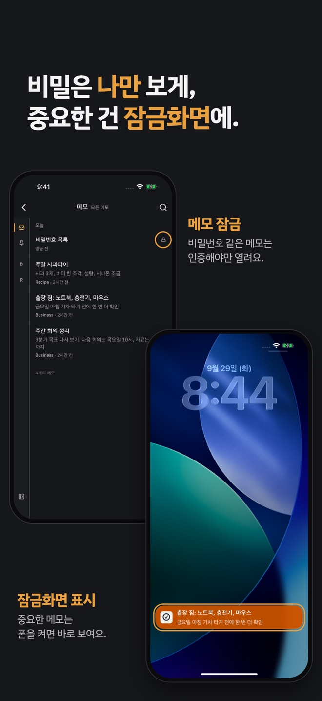
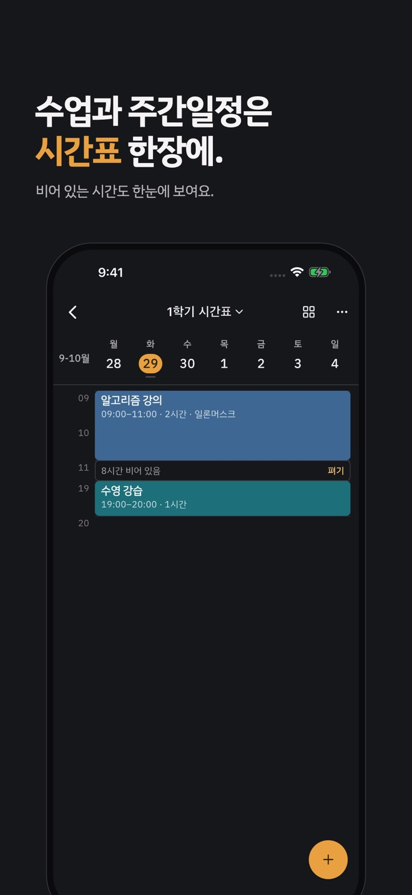
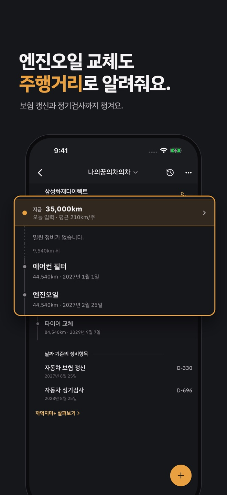
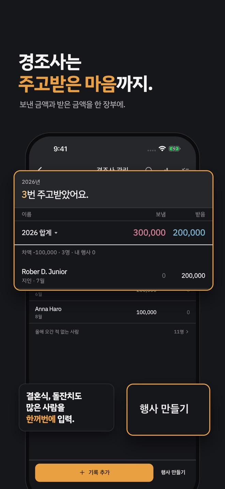

까먹기 전에, 한 줄만 적어 보세요.
할 일, 생일, 엔진오일 교체까지. 앱과 똑같은 입력창이에요.
생활 도구 넷이 함께 들어 있어요
홈 아래 칸에서 바로 열립니다. 따로 앱을 깔 필요가 없어요.




기억은 맡기고, 잠깐 멍.
자주 묻는 질문
문의
혼자 만드는 앱입니다. 평일 24시간 이내 직접 답장드려요.
bigseasons.dev@gmail.com할 일, 생일, 엔진오일 교체까지. 앱과 똑같은 입력창이에요.
홈 아래 칸에서 바로 열립니다. 따로 앱을 깔 필요가 없어요.




혼자 만드는 앱입니다. 평일 24시간 이내 직접 답장드려요.
bigseasons.dev@gmail.com